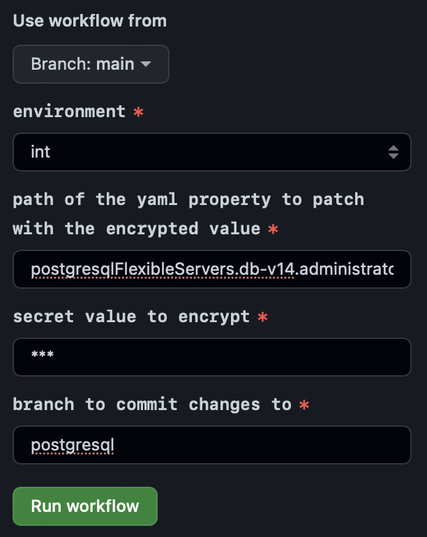

Table of Contents
- PostgreSQL Flexible Server (Pilot Phase)
PostgreSQL Flexible Server (Pilot Phase)
PostgreSQL Flexible Server is an Azure Service to run a PostgreSQL server with one or multiple databases.
UNITY offers simplified provisioning through the unity-app.*.yaml. Make sure to understand the implications of configuration changes, as they may result in unwanted data loss.
⚠️ The solution is currently in piloting phase and may be tested on the integration environment. It is not sufficiently tested for production workloads yet. The UNITY team is looking forward to your feedback.
Features
-
Customer Managed Keys
Every database is provisioned with a Customer Manged Key, which is automatically rotated every 30 days.
-
User assigned managed identity
Every database has a user assigned managed identity.
-
Point In Time Restore
Database servers can be restored to any point in time up to 35 days in the past. Note that only an entire database server can be restored to a specific point in time. If there are multiple databases on one server, there is no way to restore only a single database.
-
Major Version Migration
Automatic major version upgrades are supported. You are responsible for executing and testing the upgrades. Note that downgrading a major version is not possible.
-
Stock Keeping Units (SKUs)
Azure provides a broad range of SKUs. You are responsible for choosing the smallest SKU possible fulfilling your requirement, to keep costs for infrastructure at a minimum. By default, the smallest possible SKU will be picked, which should be sufficient to get started on an integration environment.
-
Network Integration
You database server will run in a dedicated VNET on Azure. This VNET is integrated into the BMW intranet following the Azure Network Design. In essence, the DB will be accessible from any BMW client with a
10.0.0.0/8IP. As well as any Azure VNET, such as the one where your application runs.
Limitations
-
No High Availability
High availability is currently disabled by default. This may change in the future. Read more about it in Azure’s High Availability Concept.
-
Maintenance Windows
PostgreSQL Flexible Servers are security patched automatically during maintenance windows. This can lead to short downtimes. By default, the maintenance window is configured to start Sundays, 00:00 UTC with a duration of one hour. Read more about it in Azure’s Maintenance Concept. Maintenance windows are currently selected by UNITY for you, if you need more ingrained control, please request a new feature by contacting the UNITY team.
-
No Geo Redundant Backup
Geo redundant backup is currently disabled by default. This may change in the future. Read more about it in Azure’s Geo Redundant Backup and Restore Concept.
-
No Network Peering
Network peering with the VNET of the Kubernetes cluster for low latency connections is currently not possible, due to limitations on 4Wheels Managed side. From our tests you can expect a latency around 4ms and a throughput of > 270 transactions per seconds.
Provision New Database Server
You can provision one or multiple database servers for your UNITY app as described below.
The best way to provision a new database server is to start with encrypting your administrator password. This can be done in the same way as described in encrypting secret environment variables.
When running the encrypt workflow, your yaml path for a Db server named db-v14 would be: postgresqlFlexibleServers.db-v14.administratorPassword

This workflow will create a new branch with your encrypted password. You can check out the branch and extend the config to look like the one below:
postgresqlFlexibleServers:
db-v14:
administratorPassword: crypt.v1[7kQJslSOT7dQs6XlN/R4Mma27LS/gwJKJ0T63cz7u7M=]
version: 14
After merging this config to the main branch and rolling it out to UNITY, the database server will be provisioned.
This config will create one database server db-v14. More advanced configuration is possible with details documented in the unity-app-yaml schema and in the sections below.
Connect From Local Machine
🚨 Spinning up your database can take up to 30 min, so be patient before creating an incident when something does not seam to be working after a few minutes. So far, there is no way to get notified when your database is available, this might be added in the future.
The connection will be possible with the following parameters with psql.
export PGHOST='{your app repo name}-pfs-{your db server name}.postgres.database.azure.com'
export PGUSER=postgres
export PGPORT=5432
export PGDATABASE=postgres
export PGPASSWORD='{your-password}'
psql
So for example, when your app is called foo, your DB server is called db-v14, and the password change-me, then the upper variables will look like:
export PGHOST='app-foo-pfs-db-v14.postgres.database.azure.com'
export PGUSER=postgres
export PGPORT=5432
export PGDATABASE=postgres
export PGPASSWORD='change-me'
psql
Create User and Database
To enhance the security of your database, it is discouraged to use the administrator user for all tasks. Instead, it is advisable to set up a dedicated user with minimal permissions. Follow these steps after connecting as an administrator to create a new user for your app, ensuring to choose a secure password, and then proceed to create a new database.
CREATE DATABASE int ENCODING 'utf-8' LOCALE 'en_US.utf8';
CREATE USER api WITH ENCRYPTED PASSWORD 'change-me';
GRANT ALL PRIVILEGES ON DATABASE int TO api;
It is essential to restrict the privileges of each user to only the actions they require. For improved security, consider having separate users with different sets of permissions: one for creating the schema and others for read and write operations.
Remember that it is best practice to maintain only one database per server, as PITR will be available for the entire server and not for individual databases. This approach ensures a more streamlined and efficient database management process.
Setup Quarkus
Quarkus can be set up in various ways to connect to a PostgreSQL database. Recommended articles on the topic are
- Configure Data Sources in Quarkus
- Reactive SQL Clients
- Using Flyway
- Using Hibernate Orm and Jakarta Persistence
- Simplified Hibernate Orm With Panache
The guideline below will demonstrate a minimal setup using Hibernate and Panache to implement a simple REST resource.
Add all relevant quarkus extensions
mvn quarkus:add-extension -Dextensions="jdbc-postgresql,quarkus-hibernate-orm-panache,quarkus-flyway,resteasy-reactive-jackson"
Configure the database connection as environment variables on the Quarkus deployment to connect to the database from a deployed app:
deployments:
api:
# ...
container:
# ...
env:
QUARKUS_DATASOURCE_DB_KIND:
value: postgresql
QUARKUS_DATASOURCE_DB_VERSION:
value: "14"
QUARKUS_DATASOURCE_USERNAME:
value: api
QUARKUS_DATASOURCE_JDBC_URL:
value: jdbc:postgresql://app-foo-pfs-db-v14.postgres.database.azure.com:5432/int
secretEnv:
QUARKUS_DATASOURCE_PASSWORD:
value: crypt.v1[7kQJslSOT7dQs6XlN/R4Mma27LS/gwJK0JT36cz7u7M=]
Note that QUARKUS_DATASOURCE_PASSWORD should contain the encrypted value of the user’s password.
Here are a few notes on the most important config options:
-
quarkus.hibernate-orm.second-level-caching-enabledis recommended to be set tofalsein theapplication.propertiesfor a stateless multi replica deployment, to avoid inconsistent cache state between replicas, read Hibernate Second-Level Cache for details.🚨 this is a build time config, which cannot be set in the deployment’s env variables.
-
QUARKUS_DATASOURCE_JDBC_ACQUISITION_TIMEOUTcan require some adjustments when you findAcquisition timeout while waiting for new connectionerrors on startup in the logs. This is an indication that setting up the connection to the database takes too long. One way is to increaseQUARKUS_DATASOURCE_JDBC_ACQUISITION_TIMEOUTto e.g.10seconds. It is strongly recommended, though, to check the CPU requests and limits, as this timeout can be an indication for too few resources, which is why Quarkus is running into the timeout. -
Set
QUARKUS_LOG_CATEGORY__ORG_POSTGRESQL__MIN_LEVELandQUARKUS_LOG_CATEGORY__ORG_POSTGRESQL__LEVELtoTRACEto troubleshoot connection problems. -
Set
QUARKUS_LOG_CATEGORY__ORG_FLYWAYDB__MIN_LEVELandQUARKUS_LOG_CATEGORY__ORG_FLYWAYDB__LEVELtoTRACEto troubleshoot problems with flyway. -
quarkus.hibernate-orm.metrics.enabledis recommended to be set totruein theapplication.propertiesto expose metrics to Prometheus.🚨 this is a build time config, which cannot be set in the deployment’s env variables.
-
Set
QUARKUS_HIBERNATE_ORM_LOG_SESSION_METRICStotrueto see metrics on Hibernate sessions in the logs. This requiresquarkus.hibernate-orm.metrics.enabledto betrue.
To test the connection locally, you can set the same environment variables in your IDE or use the dev profile in the application properties.
⚠️ Make sure to never commit the content of QUARKUS_DATASOURCE_PASSWORD in a run configuration or properties file.
For managing the schema, it is recommended to use flyway. It is beyond the scope of this documentation to give detailed instructions on flyway.
A minimal setup is to add the following application.properties
quarkus.flyway.migrate-at-start=true
⚠️ When implementing long-running schema migrations, there is the risk that the pod gets killed during startup, before completing the migration due to failing health checks. When long-running schema migrations are required, consider running them from a GitHub workflow or adjust health checks accordingly.
Create the schema from the following file api/src/main/resources/db/migration/V1__baseline.sql
CREATE TABLE dev_model_range ( id SERIAL PRIMARY KEY, code TEXT NOT NULL );
INSERT INTO dev_model_range values (0, 'G30');
INSERT INTO dev_model_range values (1, 'G60');
Implement a minimal resource and entity:
import io.quarkus.hibernate.orm.panache.PanacheEntity;
import jakarta.persistence.Entity;
@Entity(name = "dev_model_range")
public class DevModelRange extends PanacheEntity {
public String code;
public DevModelRange() {
}
}
import jakarta.ws.rs.GET;
import jakarta.ws.rs.Path;
import java.util.List;
@Path("/v1/dev-model-ranges")
public class DevModelRangeResource {
@GET
public List<DevModelRange> get() {
return DevModelRange.listAll();
}
}
This should allow to fetch the entities from the following REST resource locally:
GET http://localhost:8080/foo/api/v1/dev-model-ranges/
Which should result in the following JSON response:
[
{
"id": 0,
"code": "G30"
},
{
"id": 1,
"code": "G60"
}
]
Change Administrator Password
The password for the administrator is provided by you in encrypted form, when requesting a new DB server. password encryption follows the same steps as for encrypting secret environment variables.
You can update the password any time, and you are fully responsible for maintaining a secure password and rotating it in compliance with current work instructions.
Change Stock Keeping Unit (SKU)
You are responsible for choosing the smallest SKU possible fulfilling your requirement, to keep costs for infrastructure at a minimum. By default, the smallest possible burstable SKU will be picked.
In some cases (e.g. replication) it is required to switch to a non-burstable SKU (e.g. GP_Standard_D2ds_v4) as shown below.
postgresqlFlexibleServers:
db:
sku: GP_Standard_D2ds_v4
# ...
The SKU can be changed at any time and does not result in data loss. While caning the SKU the database will not be available.
Migrate From a PostgreSQL Outside of UNITY
You should create a dump using pg_dump from your original database and restore it into the new database using pg_restore. Detailed instructions is currently beyond the scope of this documentation.
Replication
The read replica feature allows you to replicate data from an Azure Database for PostgreSQL server to a read-only replica. Replicas are updated asynchronously with the PostgreSQL engine native physical replication technology.
see Read replicas in Azure Database for PostgreSQL.
A read replica can be set up for any database server.
Before a read replica can be set up, the source database server as well as the read replica server must be configured to have a non-burstable SKU. Here is a complete example:
postgresqlFlexibleServers:
db-v14:
administratorPassword: crypt.v1[7kQJslSOT7dQs6XlN/R4Mma27LS/gwJKJ0T63cz7u7M=]
version: 14
sku: GP_Standard_D2ds_v4
db-v14-replica:
administratorPassword: crypt.v1[7kQJslSOT7dQs6XlN/R4Mma27LS/gwJKJ0T63cz7u7M=]
version: 14
mode: Replica
sourceServerName: db-v14
sku: GP_Standard_D2ds_v4
Promote Replica
Disconnecting a read replica from its source is called promoting. After promoting a replica it will be a standalone database server which cannot be connected to its source server later on at any point in time.
To promote the replica from the example above, add the replicationRole: None.
postgresqlFlexibleServers:
db-v14:
administratorPassword: crypt.v1[7kQJslSOT7dQs6XlN/R4Mma27LS/gwJKJ0T63cz7u7M=]
version: 14
sku: GP_Standard_D2ds_v4
db-v14-replica:
administratorPassword: crypt.v1[7kQJslSOT7dQs6XlN/R4Mma27LS/gwJKJ0T63cz7u7M=]
version: 14
mode: Replica
sourceServerName: db-v14
replicationRole: None
sku: GP_Standard_D2ds_v4
🚨 Note, when a database server was created as replica, you need to keep the sourceServerName and replicationRole role in the config, even if you upgrade the promoted replica to a newer version as shown below.
postgresqlFlexibleServers:
db-v14:
administratorPassword: crypt.v1[7kQJslSOT7dQs6XlN/R4Mma27LS/gwJKJ0T63cz7u7M=]
version: 14
db-v14-replica:
administratorPassword: crypt.v1[7kQJslSOT7dQs6XlN/R4Mma27LS/gwJKJ0T63cz7u7M=]
version: 15
mode: Update
sourceServerName: db-v14
replicationRole: None
Note that upgrading a server in replication mode (i.e. replicationRole: null is currently unsupported).
Point in Time Restore (PITR)
⚠️ DOWNTIME: while restoring, make sure the original database does not receive any writes. All changes after the restore point will be lost.
PITR is the standard way to restore corrupted data. You can restore the state of the entire database server to any point up to 35 days in the past.
PITR will always result in a new database server! So the original server will always stat as is. After restoring a database you can destroy the original database if not needed anymore.
Here is a step-by-step procedure to recover from corrupted data:
- Decide if you need to shut down your app. To avoid keep writing to the original database which should be replaced, it might be the best approach to shut down your application while restoring your database. To do so, you can set all replicas to 0.
deployments: ui: replicas: 0 # ... api: replicas: 0 # ...Alternatively, you can also set your application to a read only mode, if you have prepared your application for this scenario.
- Restore your database server by adding another database server with mode
PointInTimeRestore. You need to keep your original database server until you have restored into you new database server.postgresqlFlexibleServers: db-v14: version: 14 administratorPassword: crypt.v1[7kQJslSOT7dQs6XlN/R4Mma27LS/gwJKJ0T63cz7u7M=] db-v14-pitr: administratorPassword: crypt.v1[7kQJslSOT7dQs6XlN/R4Mma27LS/gwJKJ0T63cz7u7M=] version: 14 mode: PointInTimeRestore sourceServerName: db-v14 pointInTimeRestoreUTC: "2023-07-21T08:55:00Z"🚨 the destination server must have the same major version as the source server. 🚨 Note that
sourceServerNameandpointInTimeRestoreUTCrestore must be kept in the config, even if a version upgrade is done or if the source server is deleted. - Verify new DB is up and running. As soon as the recovery process completed, you should verify that it is up and running. Try connecting to your new DB with e.g.
psql.export PGHOST=app-foo-pfs-db-v14-pitr.postgres.database.azure.com export PGPORT=5432 export PGDATABASE=int export PGUSER=postgres export PGPASSWORD="{your-password}" pslq - Switch your app to the new database (and scale it up again) To do so, change the connection URL of your app to the new URL and scale up replicas.
deployments: ui: replicas: 1 # ... api: replicas: 1 env: QUARKUS_DATASOURCE_JDBC_URL: value: jdbc:postgresql://app-foo-pfs-db-v14-pitr.postgres.database.azure.com:5432/int # ...
Upgrade Major PostgreSQL Version
You can migrate from one major version to the next one in an automated way.
⚠️ Note, once a database was upgraded to the next major version, it cannot be downgraded again.
There are several protocols you can follow, outlined in the sections below.
Upgrade Dry-Run
It is strongly recommended to test major version migration on a PITR server before doing the actual migration. While testing the upgrade, your app is not affected and no downtime will occur.
The basic idea is to create a PITR server of a recent timestamp. Instead of switching your app to the restored server, you keep it running on the original DB. The restored replica can be used to test the migration.
In detail, follow the steps below:
- Create a PITR replica without changing the version
postgresqlFlexibleServers: db-v13: version: 13 # ... db-v14: version: 13 mode: PointInTimeRestore sourceServerName: db-v13 pointInTimeRestoreUTC: "2023-07-21T08:55:00Z" # ... - Migrate the replica to the new version by removing the
pointInTimeRestoreUTCandsourceServerNameand changing the mode toUpdate.postgresqlFlexibleServers: db-v13: version: 13 # ... db-v14: version: 14 mode: Update # ... - Verify that your new DB is working as expected.
- Complete the test by cleaning up the test replica.
postgresqlFlexibleServers: db-v13: version: 13 # ...
Upgrade With Server Switch
⚠️ DOWNTIME: while upgrading, make sure the original database does not receive any writes. All changes after the restore point will be lost.
This protocol follows the dry run outlined below, but combines it with a PITR.
- Decide if you need to shut down your app. To avoid keep writing to the original database which should be replaced, it might be the best approach to shut down your application while restoring your database. To do so, you can set all replicas to 0.
deployments: ui: replicas: 0 # ... api: replicas: 0 # ...Alternatively, you can also set your application to a read only mode, if you have prepared your application for this scenario.
- Restore your database server by adding another database server with mode
PointInTimeRestorewithout changing the version. You need to keep your original database server until you have restored into you new database server.postgresqlFlexibleServers: db-v13: version: 13 administratorPassword: crypt.v1[7kQJslSOT7dQs6XlN/R4Mma27LS/gwJKJ0T63cz7u7M=] db-v14: administratorPassword: crypt.v1[7kQJslSOT7dQs6XlN/R4Mma27LS/gwJKJ0T63cz7u7M=] version: 13 mode: PointInTimeRestore sourceServerName: db-v13 pointInTimeRestoreUTC: "2023-07-21T08:55:00Z" - Verify new DB is up and running. As soon as the recovery process completed, you should verify that it is up and running. Try connecting to your new DB with e.g. psql.
export PGHOST=app-foo-pfs-db-v14.postgres.database.azure.com export PGPORT=5432 export PGDATABASE=int export PGUSER=postgres export PGPASSWORD="{your-password}" pslq - Migrate the replica to the new version by removing the
pointInTimeRestoreUTCandsourceServerNameand changing the mode toUpdate.postgresqlFlexibleServers: db-v13: version: 13 # ... db-v14: version: 14 mode: Update # ... - Verify the upgrade succeeded.
- Switch your app to the new database (and scale it up again) To do so, change the connection URL of your app to the new URL and scale up replicas.
deployments: ui: replicas: 1 # ... api: replicas: 1 env: QUARKUS_DATASOURCE_JDBC_URL: value: jdbc:postgresql://app-foo-pfs-db-v14.postgres.database.azure.com:5432/int # ... - Clean up the old database.
postgresqlFlexibleServers: # ... db-v13 removed db-v14: version: 13 # ...
In-Place Upgrade
⚠️ DOWNTIME: the database server will not be available during upgrade.
It is recommended, to perform a dry run before you do an in place upgrade. Keep in mind that an upgrade may fail, and you should have a cut-over plan to recover from that situation. For prototypes, and apps with very low service level objectives, it may be an option to simply do an in place upgrade. To do so, simply update your DBs config from e.g.
postgresqlFlexibleServers:
db:
version: 13
# ...
to:
postgresqlFlexibleServers:
db:
version: 14
mode: Update
# ...
Disaster Recovery
If you accidentally removed a database from your configuration, the database server will be deleted including all data.
The UNITY team has undertaken several measures to recover from that disaster. In any case, you should open an incident as soon as possible, as time matters in this case. You will need the UNITY teams assistance in this case.
It is made sure that a backup is created from your database before applying any changes such as destroying it. These backups are created using pg_dump and stored in a container. This container will be deleted together with a database. Unlike the deleted database server, it can be recovered for 30 days. That means, 30 days after your database server was deleted, all data is deleted permanently.